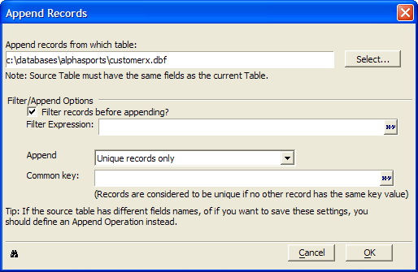

Appending Selected Records from another Table
You may append selected records from another table to the current table using the Append Operation or when viewing a table through a form or browse.
To append records:
Select Records > Append Records... .

Click Select..., then navigate to and select the table whose records you want to append.
Optionally, choose to select to filter the records you wish to append.
Check Filter records before appending?
Enter an expression that selects the records to append. Optionally, click
 to
use the <span class=Screen>Expression Builder</span> to help you define the expression.
to
use the <span class=Screen>Expression Builder</span> to help you define the expression.Make a selection from the Append list. The options are:
"All"
"Unique records only"
"Unique records and replace existing records"
If you selected "Unique records only" or "Unique records and replace existing records" in step 4, enter an expression in Common key that associates the two tables. Optionally, click
to use
the <span class=Screen>Expression Builder</span> to help you define the expression.Optionally, click
 to view the Xbasic code generated by this procedure.
to view the Xbasic code generated by this procedure.Click OK to proceed with the append or Cancel to quit without appending.
See Also
Append Operations, Copying Records from another Table, Moving Records to another Table